Mehroma
MEHROMA
About us
mehr-o-ma (Sun and moon)
Mehroma is a reflective heritage preservation project. Our handcrafted jewelry reinterprets fading motifs from the world’s largest Picture Wall in Lahore Fort, Pakistan.
Source
Reinterpretation
Material Detail
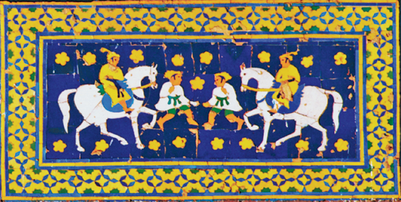
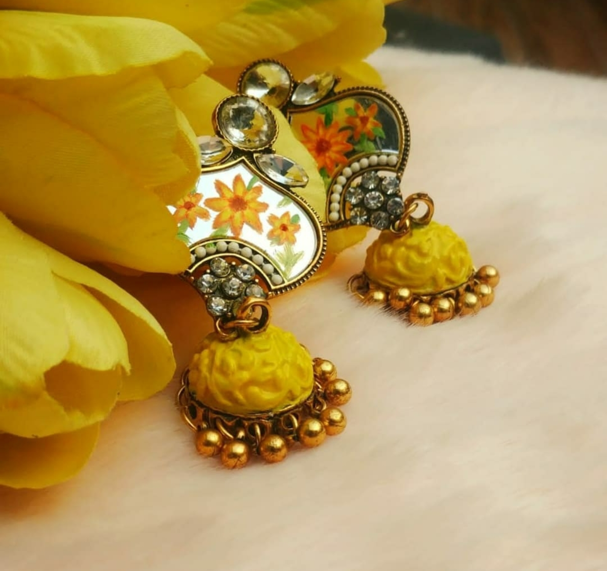
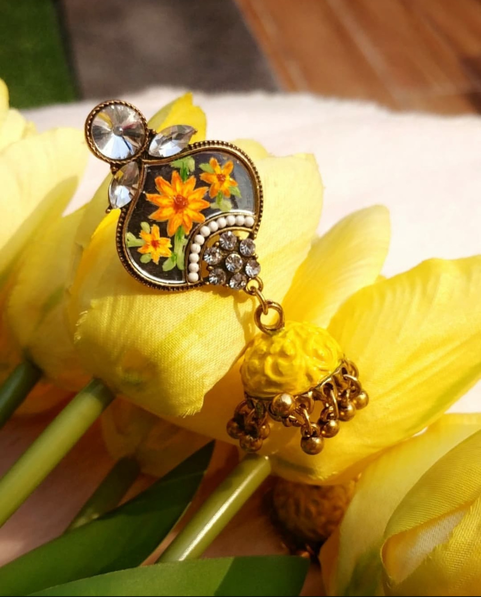
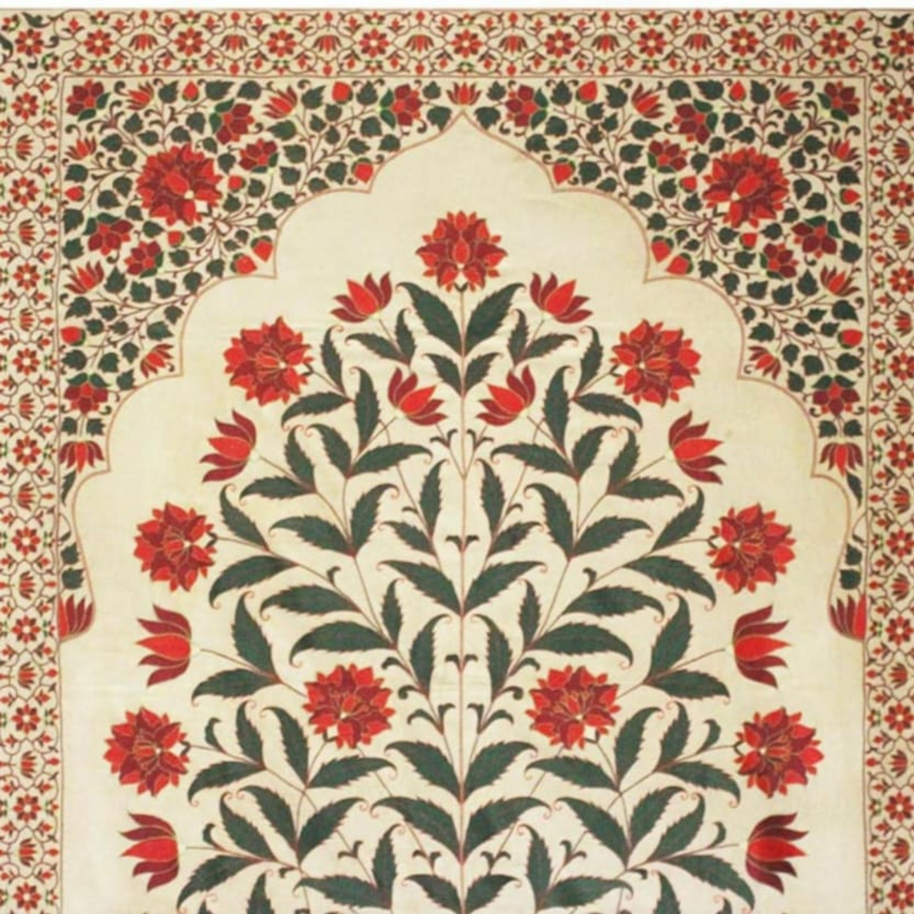

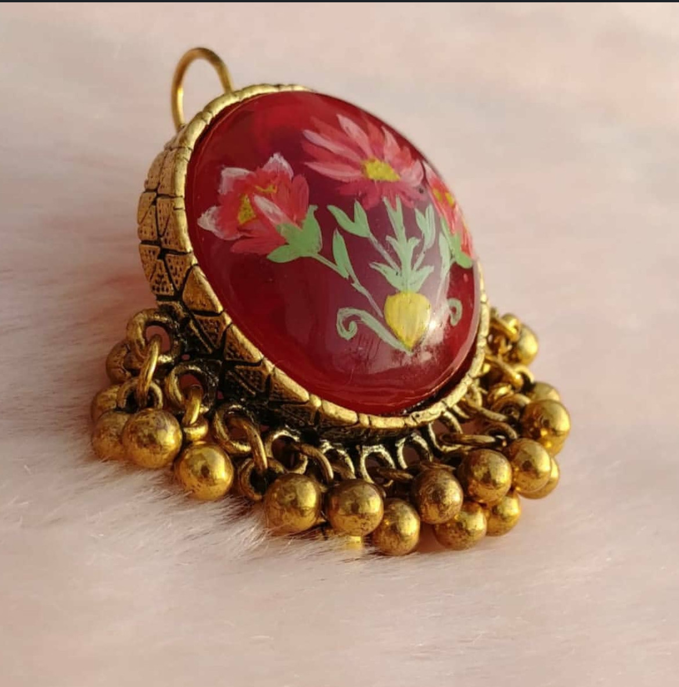
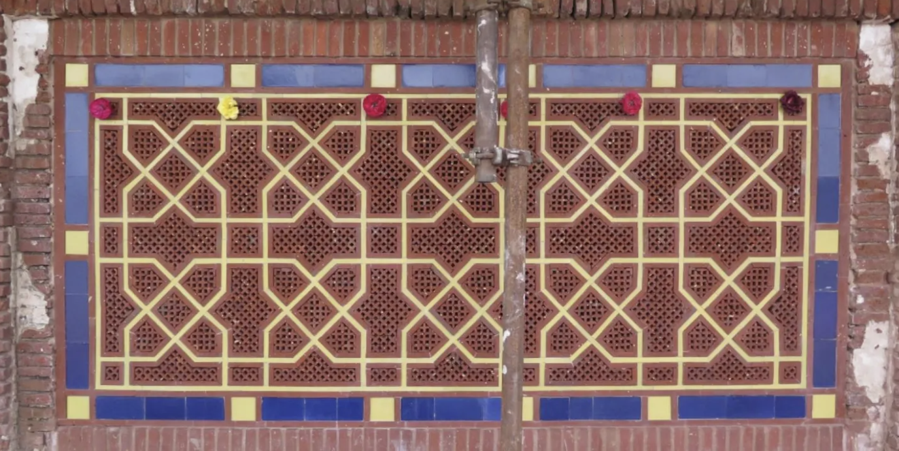
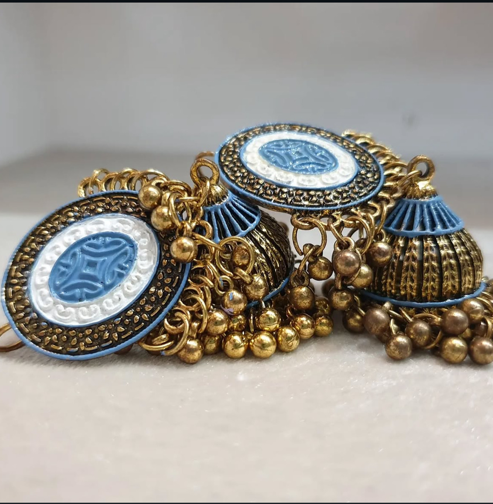
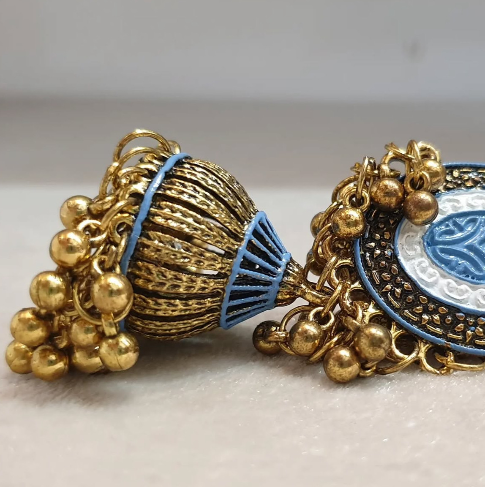
Lahore Fort’s Picture Wall Restoration
When I began Mehroma, the 400-year-old Picture Wall was still undergoing restoration. The seven-year conservation effort was completed in 2025 and brought new life to motifs I first encountered while they were deteriorating.
Mehroma grew from those early encounters with fading frescoes, fractured colors, and damaged surfaces.
The restoration reflects the work of hundreds of artisans who revived the Wall through careful pigment matching, surface repair, and patient conservation during Lahore’s intense summers.
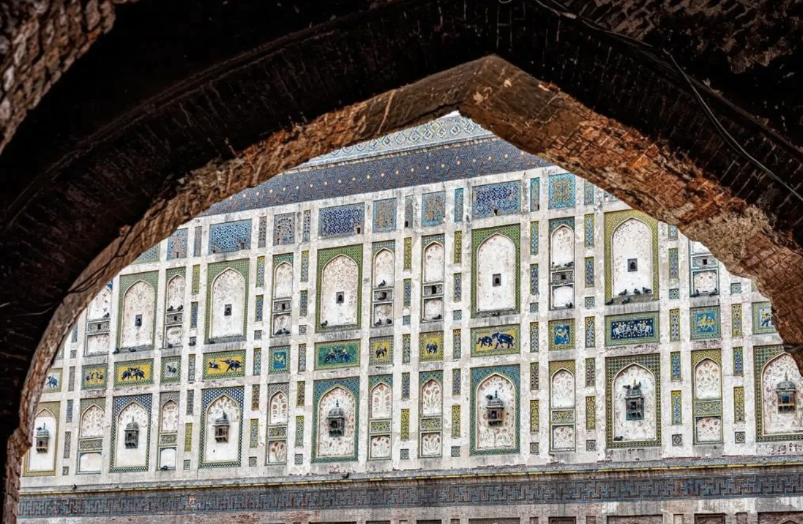
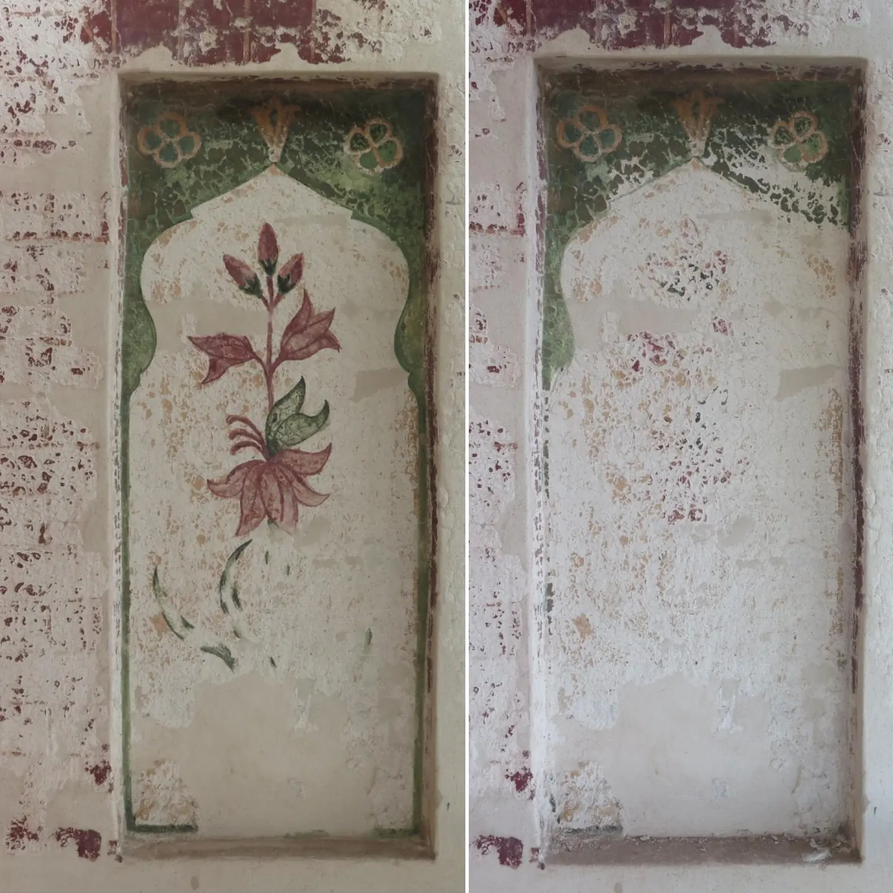
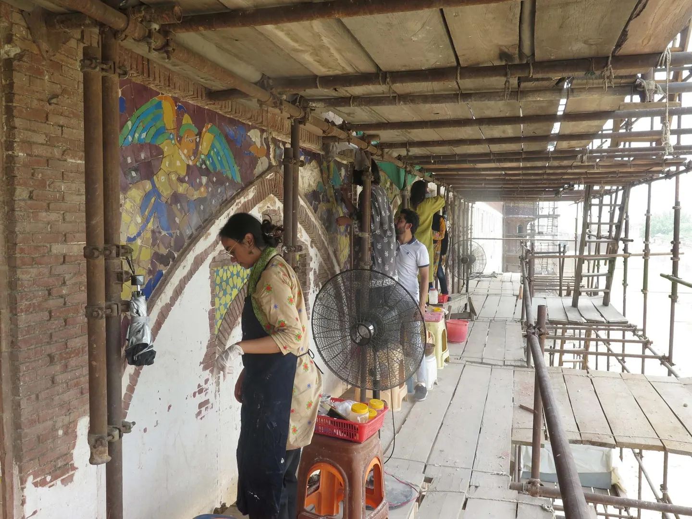
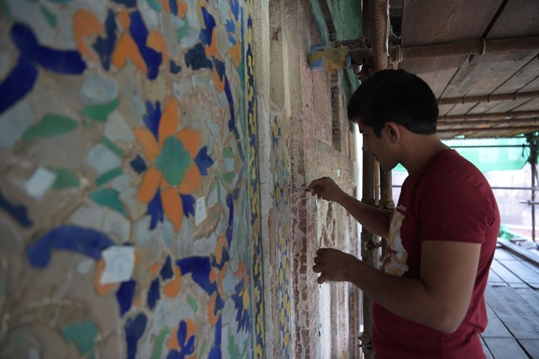
Artisans amid restoration efforts. Images via Forbes